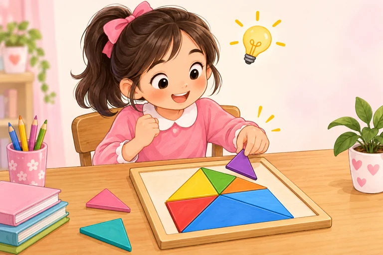

Australia
Úc
AUSTRALIA
My friend is from Australia.
Chưa đánh dấu
Unit 3 · Học trước, thử nhớ rồi luyện đề
Ghép tên nước với quốc tịch, nói tính cách và giới thiệu bạn. Không đoán quốc tịch từ ngoại hình.
Giọng có sẵn trên thiết bị. Thiếu giọng Anh thì em vẫn xem chữ và luyện viết được.
Bấm Nghe khi em sẵn sàng. Trang không tự phát âm thanh.
Nghe cả từ/cụm, đọc theo rồi dùng ABC để nhớ cách viết. ABC đọc tên chữ cái, không phải bài luyện âm. Với cụm nhiều từ, các nhóm chữ được tách riêng.
Chưa có từ cần ôn. Em chọn một nhóm rồi bấm “Cần ôn lại” ở từ muốn luyện thêm nhé.
Úc
My friend is from Australia.
Chưa đánh dấu
quốc tịch: Úc
My friend is Australian.
Chưa đánh dấu
Malaysia
My friend is from Malaysia.
Chưa đánh dấu
quốc tịch: Malaysia
My friend is Malaysian.
Chưa đánh dấu
Mỹ
My friend is from America.
Chưa đánh dấu
quốc tịch: Mỹ
My friend is American.
Chưa đánh dấu
Nhật Bản
My friend is from Japan.
Chưa đánh dấu
quốc tịch: Nhật Bản
My friend is Japanese.
Chưa đánh dấu
Anh (Britain)
My friend is from Britain.
Chưa đánh dấu
quốc tịch: Anh (Britain)
My friend is British.
Chưa đánh dấu

thân thiện
My friend is friendly.
Chưa đánh dấu
hay giúp đỡ
My friend is helpful.
Chưa đánh dấu

thông minh
My friend is clever.
Chưa đánh dấu
năng động
My friend is active.
Chưa đánh dấu
tóc dài
She has long hair.
Chưa đánh dấu
tóc ngắn
He has short hair.
Chưa đánh dấu
mắt to
She has big eyes.
Chưa đánh dấu
người bạn
This is my friend.
Chưa đánh dấu
Nghe hội thoại rồi đọc theo. “Đến lượt em” chỉ đọc A để em nói câu trả lời của B.
A: Where is she from?
B: She is from Japan.
From + tên nước: bạn ấy đến từ Nhật Bản.
A: What nationality is he?
B: He is Australian.
Quốc gia Australia; quốc tịch Australian. Không đoán từ khuôn mặt.
A: What is she like?
B: She is friendly and helpful.
Bạn ấy có tính cách thế nào? — Thân thiện và hay giúp đỡ.
A: What is he like?
B: He is active. He likes playing basketball.
Active nói năng động; hành động chỉ minh họa nghĩa, không kết luận tính cách từ ngoại hình.
A: Who is this?
B: This is my friend Mai. She has long hair and big eyes.
Dùng has với tóc, mắt; không dùng is long hair.
A: What grade is she in?
B: She is in Grade 5.
Bạn ấy học lớp 5.
Ví dụ tự soạn. Vị trí và sở thích là giả định theo từng ví dụ. Trang không thu âm hoặc tự chấm giọng của em.
Mỗi nhóm có bốn bài nhỏ, không giới hạn thời gian. Em được sửa rồi thử lại. Câu trả lời tự lưu để quay lại làm tiếp.